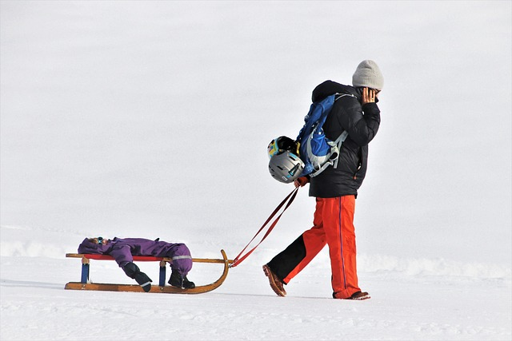
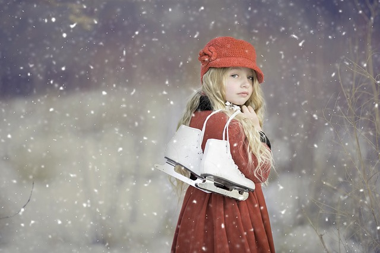
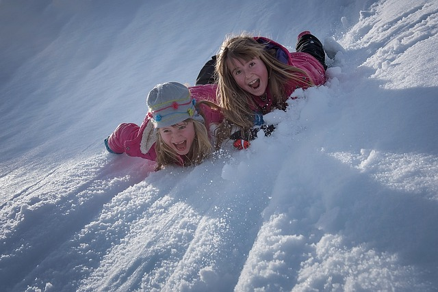

Ćwiczymy motorykę dużą zimą
Na motorykę dużą składają się takie umiejętności, jak: chodzenie, skakanie, kopanie, bieganie, skłony, ruchy rękoma i tułowiem. Zima daje nam wiele możliwości, by ją trenować. I wcale nie trzeba do tego wyjeżdżać w góry, by mieć możliwość jeżdżenia na nartach. Jedyny warunek – choć też nie zawsze – jest taki, by spadł śnieg 🙂
Korzyści z przebywania zimą na dworze
Korzyści z przebywania zimą na świeżym powietrzu są duże. Pierwsza i zasadnicza to wzrost odporności. Niskie temperatury hartują organizm malucha. Do tego mózg otrzymuje więcej tlenu, a sam ruch zwiększa produkcję endorfin, które wywołują dobre samopoczucie i powodują zadowolenie z siebie. Jest to również okazja do wspólnego spędzania czasu z rodzicami, budowania więzi, okazja do rozmowy, a więc także rozwijania komunikacji.
Jak rozwijamy motorykę dużą?
Już samo brodzenie w śniegu, robienie aniołków, rzucanie śnieżkami czy turlanie się wzmacnia mięśnie dziecka. Dziecko jest ubrane w grubą kurtkę lub kombinezon, które ograniczają jego ruchy, ponadto śnieg stawia opór – maluch musi użyć więcej siły niż zwykle, by się poruszać. Jest to dla niego bardzo dobry trening.
Sanki
Nie uznaję za sport ciągnięcia siedzącego na sankach dziecka. Nie daje mu to nic, poza oddychaniem mroźnym powietrzem. Ale już zjeżdżanie z górki, nawet niedużej, pod którą dziecko musi potem wejść – samo lub dodatkowo ciągnąc saneczki – to bardzo dobry pomysł na ruch. Nie będę się tu rozpisywać na temat bezpieczeństwa czy rodzaju sprzętu do zjeżdżania. Rodzice muszą go dostosować sami do umiejętności dziecka, warunków, nachylenia terenu. Wiadomo, zanim puścimy dziecko same z dużej góry, musimy mieć pewność, że potrafi kierować sprzętem, na którym zjeżdża.

Narty i snowboard
Z doświadczenia wiem, że najlepiej na początku skorzystać z lekcji z instruktorem 🙂 Moje osobiste doświadczenie bez instruktora było dość bolesne 🙂 Tutaj znowu - nie zawsze konieczne jest szukanie górek. Są jeszcze narty biegowe, z którymi dzieci również radzą sobie świetnie.
Łyżwy
Do tego sportu nie potrzebujemy nawet śniegu, wystarczy odpowiednio niska temperatura. Coraz częściej w miastach powstają na zimę ogólnodostępne ślizgawki, przy których można nawet wypożyczyć potrzebny sprzęt. Moja starsza córka zaczynała w wieku 6 lat i radziła sobie bardzo dobrze. Największym problemem przy młodszej był rozmiar łyżew, na szczęście przez ostatni rok trochę urosła, sprzęt już ma, debiut niedługo.
Inne zabawy
Śnieg daje nam dużo więcej możliwości zabawy, nawet takiej, do której nie potrzeba żadnego sprzętu. Możemy ulepić bałwana, niekoniecznie takiego z trzech kulek z garnkiem na głowie. Kaczka Katastrofa z psem Pypciem ulepili całą ich rodzinkę. Może wam też się to uda? A gdyby zrobić dwie barykady i urządzić prawdziwą bitwę na śnieżki? Albo zamieszkać na chwilę we własnoręcznie wybudowanym igloo?
Co rozwijamy?
Zabawy na śniegu i sporty zimowe kształtują ogólną sprawność organizmu. Rozwijają mięśnie, które zwykle nie są używane. Poprawiają postawę ciała, kształtują umiejętność trzymania równowagi, koordynację wzrokowo-ruchową. Bardzo mocno pracuje wtedy kręgosłup, a także mięśnie grzbietu i brzucha, których dobra kondycja jest konieczna do ćwiczeń motoryki małej i zapewnia prawidłową postawę podczas pisania, na którym w szkole dzieci spędzają przecież sporo czasu. Kolejnym obszarem wzmacnianym podczas uprawiania sportów zimowych jest obręcz barkowa, a następnie ramiona i przedramiona. Ich ruchy również wchodzą w skład motoryki dużej. Jak to robimy? Rzucając śnieżkami, tocząc kule na bałwana, trzymając kijki narciarskie i operując nimi czy wymachując rękami przy utrzymywaniu równowagi podczas jazdy na łyżwach czy snowboardzie.
Oprócz korzyści dla rozwoju ruchowego, uprawianie sportów zimowych przynosi również pozytywne skutki dla rozwoju psychicznego: buduje pewność siebie i podnosi samoocenę dziecka, uczy radzenia sobie z porażką i wiary we własny sukces, zwiększa zaufanie do samego siebie, pozwala uczyć się odpowiedzialności za współuczestników zabawy (np. podczas jazdy na stoku czy lodowisku).
Życzmy więc sobie mroźnych i śnieżnych zim i korzystajmy z nich całą rodziną 🙂